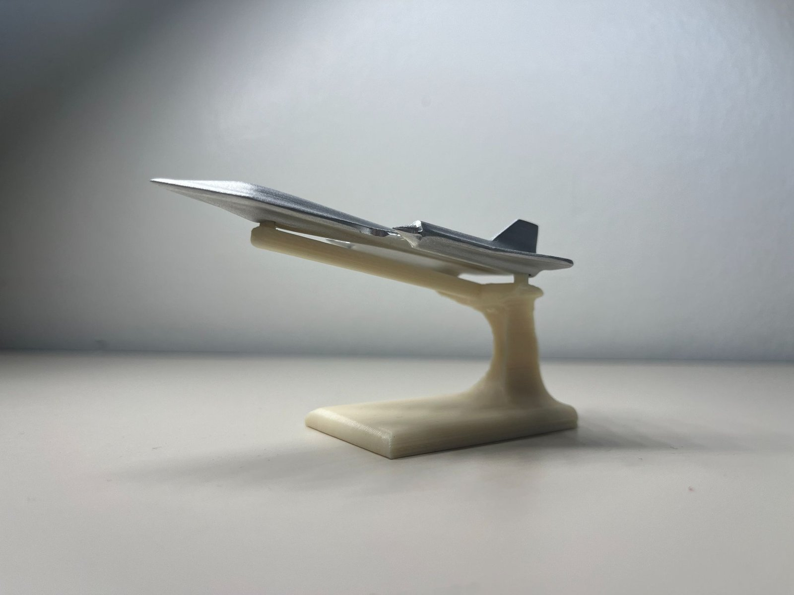
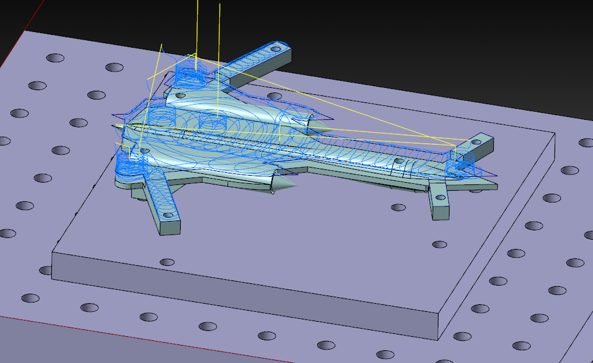
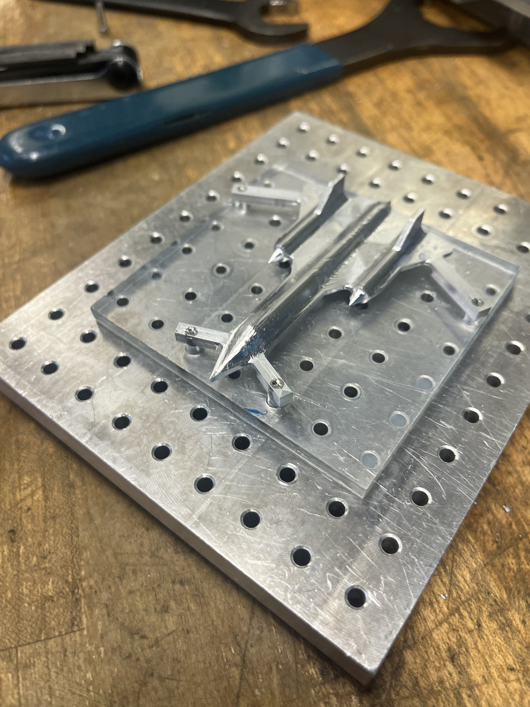
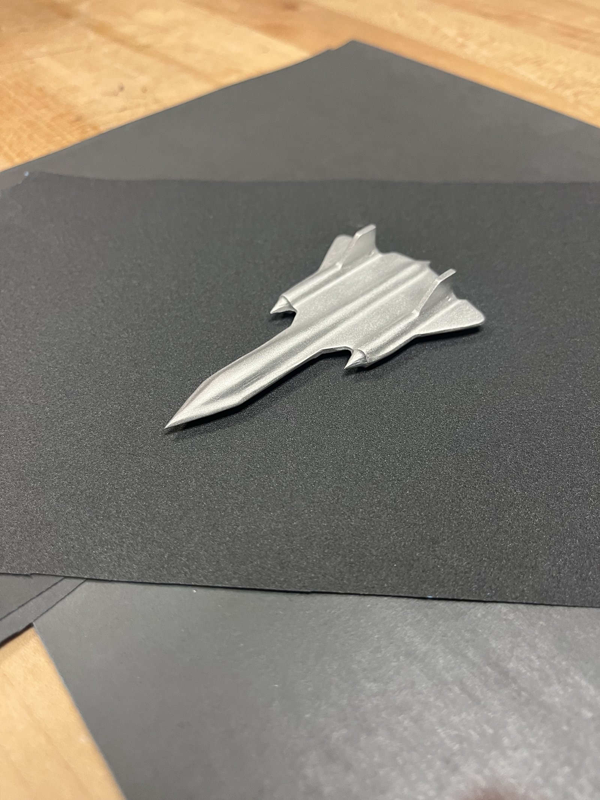
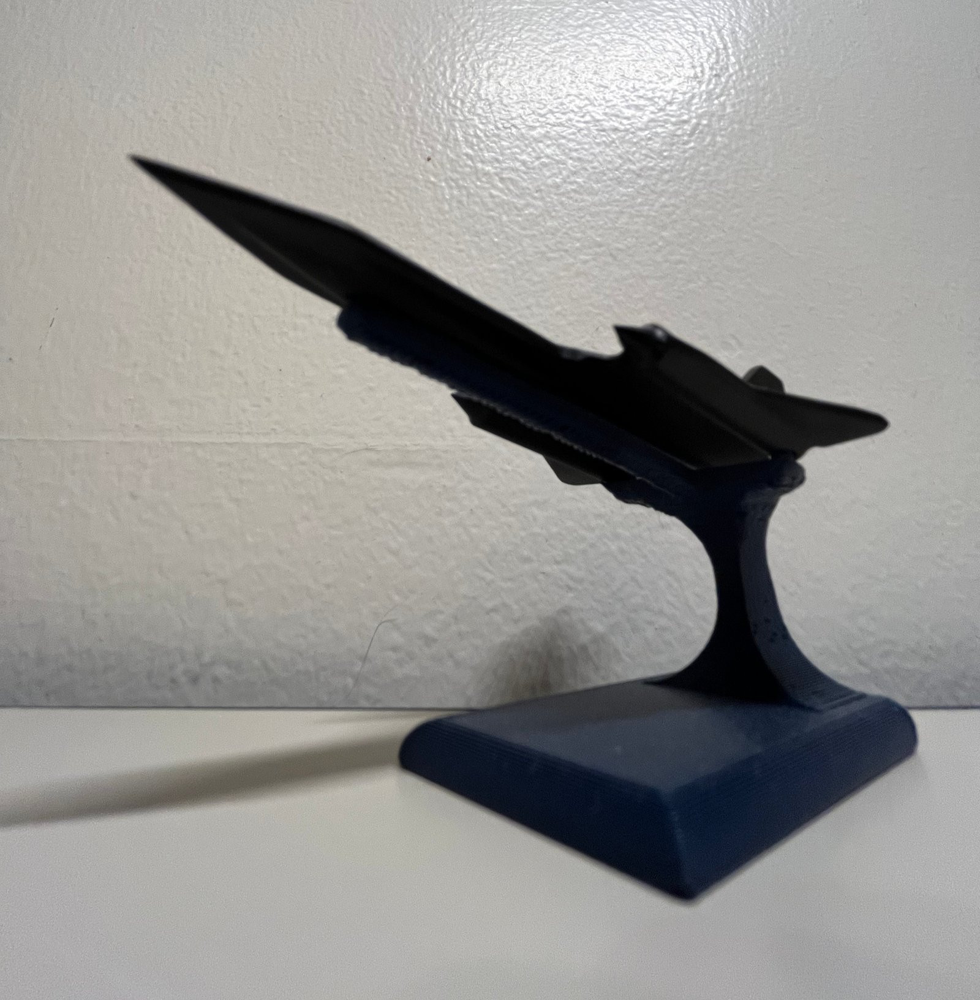

Design / Fabrication, 2024
SR-71 Display Model
A machined display model of the SR-71 Blackbird, translating one of the most recognizable airframes ever built into clean, machinable geometry.

Overview
The SR-71's chines, blended fuselage, and engine nacelles are continuous compound surfaces, exactly the geometry that's hardest to capture with subtractive machining. The challenge was reducing the airframe to a form that reads instantly as a Blackbird while remaining producible with available tooling and setups.
That meant keeping the features that carry the silhouette, like the chines and the nacelles, and smoothing the rest into shapes a 3-axis mill can reach.


Execution
I modeled the simplified airframe in CAD, programmed the toolpaths in MasterCAM, and milled the airframe from aluminum plate on a 3-axis CNC using a fixture-plate setup. After release from the stock, the part was deburred and hand-polished, then anodized and mounted on a printed display stand. The photos below show it straight off the fixture and finished.

